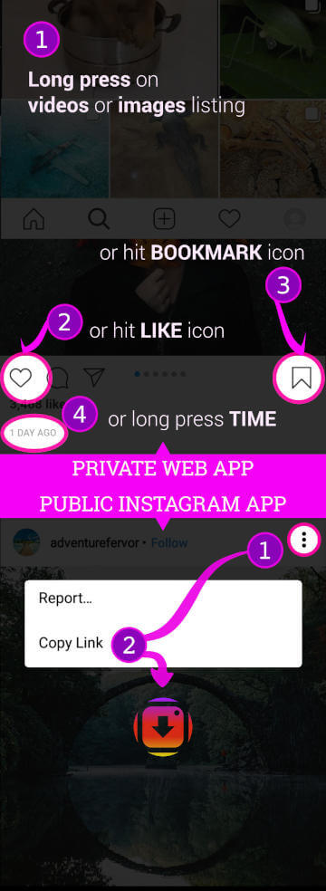
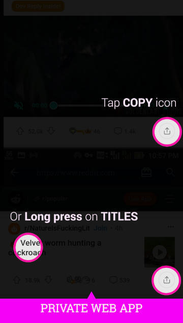
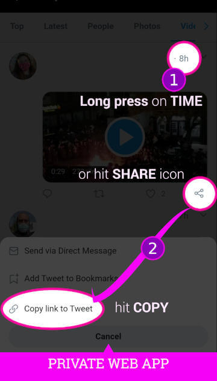
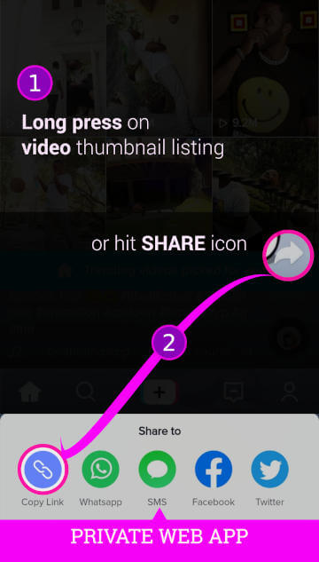
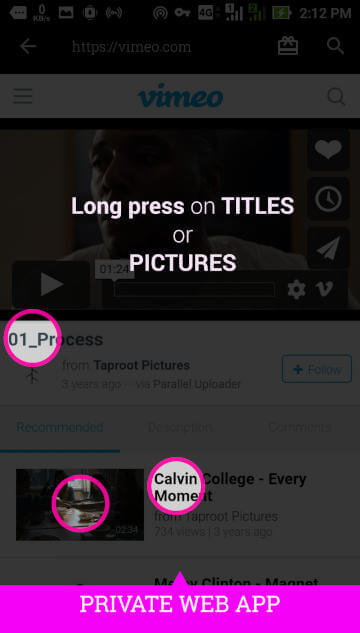

- Tekan lama pada thumbnail kecil (video atau gambar) di halaman daftar: /tags, /explore, /profile, atau halaman pencarian, dll.
- Atau ketuk ikon BOOKMARK.
- Atau ketuk ikon SUKA.
- Atau tekan lama pembuatan postingan TIME.
- Tekan Salin tautan.
- Atau tekan Bagikan tautan, dan temukan ikon Pengunduh VIP.
Informasi! Pengikisan (scraping) memerlukan Opsi A. Opsi B dan pengikisan mungkin mengharuskan Anda memberikan kredensial tiruan melalui Setelan > Akun karena pembatasan. Opsi B dapat memicu peringatan email Login baru yang mengganggu karena sesi yang kurang persisten. Silakan gunakan internal (opsi A) untuk kenyamanan terlepas dari keterbatasannya -- karena merupakan aplikasi web, bukan aplikasi asli. Prinsip yang sama kemungkinan berlaku untuk situs lain yang didukung, kecuali dinyatakan lain.
- Video:
- Tekan lama pada JUDUL atau GAMBAR.
- Atau ketuk ikon SALIN.
- Gambar:
- Idem sama.
Informasi! Beberapa ISP seperti di Indonesia memblokir Reddit, Vimeo, dll. Gunakan VPN, proxy, dll., atau tetap aman. Hanya berfungsi untuk pos yang berdiri sendiri, bukan yang disematkan di dalam pos lain. Cukup kunjungi pos aslinya untuk mengunduh, jika masalah masih ada.
- Video/ gambar:
- Tekan lama pada pembuatan postingan TIME (mis.: 1j atau 19m) di sebelah kanan nama pengguna di setiap kartu halaman listingan.
- Atau ketuk ikon BAGIKAN di kanan bawah daftar kartu, dan tekan Salin tautan ke Tweet.
- Gambar:
- Tekan lama pada gambar internal atau dihosting di Twitter. Jika banyak gambar, cukup tekan lama salah satunya sebagai perwakilan untuk seluruh gambar dalam postingan, tidak semuanya.
Informasi! Tidak seperti gambar biasa, atau situs video lainnya, menekan lama pada pratinjau gambar video Twitter tidak akan berfungsi. Hanya berfungsi untuk tweet yang berdiri sendiri, bukan tweet yang disematkan di dalam tweet lain, yang diidentifikasi dengan kotak/kartu berbatas. Kunjungi saja tweet aslinya untuk mengunduh. Gambar yang mengarah ke situs eksternal, diidentifikasi oleh https://t.co/... url, belum dihosting secara internal di Twitter, belum didukung.
TikTok/ Likee/ SnackVideo
- Video:
- Tekan lama pada gambar mini video kecil di halaman profil.
- Atau ketuk ikon BAGIKAN di kanan bawah, dan tekan Salin tautan.
- Gambar:
- Tidak ada dukungan.
Informasi! Antarmuka web tidak memiliki fitur pencarian dan daftar. Namun Anda dapat mencari nama pengguna menggunakan pencarian internal yang disediakan oleh aplikasi ini di sudut kanan atas. Anda juga dapat mengunduh video langsung dari aplikasi TikTok atau aplikasi serupa. Satu-satunya perbedaan adalah ukurannya yang sedikit lebih besar, tanpa tanda air, dan organisasi yang terintegrasi dengan penyedia video lain jika menggunakan aplikasi ini. Dan tidak ada watermak untuk TikTok dan Suka. Untuk SnackVideo, gunakan Salin tautan melalui aplikasi mereka karena tidak memiliki situs web yang dapat digunakan.
Jamendo
Pada halaman daftar lagu tempat Anda melihat deretan trek, tekan lama pada JUDUL lagu. Bukan gambar mini, bukan ikon (ikon unduhan, dll.), atau judul di halaman penuh.
Vimeo
- Video:
- Tekan lama pada JUDUL atau GAMBAR.
- Gambar:
- Tidak ada dukungan.
Informasi! Beberapa ISP seperti di Indonesia memblokir Reddit, Vimeo, dll. Gunakan VPN, proxy, dll., atau tetap aman.
Other supported sites
- Temukan dan tekan Salin tautan, biasanya ditampilkan setelah mengeklik ikon tiga titik, ikon BAGIKAN, atau serupa.
- Atau tekan lama (bukan klik) pada TIMESTAMP jika tersedia.
- Atau kunjungi halaman penuh video. Putar videonya. Lewati iklan, jika ada. Tunggu sekitar 10 detik hingga parser melakukan tugasnya. Jika diminta, situs tersebut didukung.
- Tebakan berhasil, tidak dijamin: tekan lama (bukan klik) pada JUDUL, atau video THUMBNAILS, biasanya di halaman daftar. Jika didukung, Anda akan diminta, diproses untuk sukses atau gagal. Jika gagal, maka tidak didukung.
Reload or refresh page
- untuk mengambil feed atau postingan terbaru.
- jika halaman kosong karena koneksi gagal, dll.
Situs terdukung lainnya
- Tebakan berhasil, tidak dijamin: tekan lama (bukan klik) pada JUDUL, atau video THUMBNAILS, biasanya di halaman daftar. Jika didukung, Anda akan diminta, diproses untuk sukses atau gagal. Jika gagal, maka tidak didukung.
- Tekan lama (bukan klik) pada TIMESTAMP atau TITLE pada halaman daftar jika tersedia.
- Temukan dan tekan Salin tautan, biasanya ditampilkan setelah mengeklik ikon tiga titik, ikon BAGIKAN, atau serupa.
- Atau kunjungi halaman penuh video. Putar videonya. Lewati iklan, jika ada. Tunggu sekitar 10 detik hingga parser melakukan tugasnya. Jika diminta, situs tersebut didukung.
Tips
- Jika gambar di bagian tutorial ini tidak terlihat, pastikan untuk terhubung ke internet.
- Berhati-hatilah! Jangan gunakan antarmuka web aplikasi untuk mendaftarkan akun. Ini hanya WebView, bukan browser asli, terlalu banyak batasan dapat merusak proses pendaftaran, seperti mengunggah, menempel, dll. Gunakan browser asli atau aplikasi resmi untuk pendaftaran. Hampir mirip dengan versi LITE dari semua aplikasi resmi -- Twitter lite, Facebook lite, dll. Hanya saja kurang rumit/canggih. Gunakan setelah Anda memiliki akun untuk masuk dan mengunduh, bukan untuk mendaftarkan akun baru.
- Jika Salin tautan tidak disediakan oleh aplikasi yang didukung (seperti aplikasi reddit resmi), temukan ikon Pengunduh VIP melalui Bagikan biasa niat sebagai upaya terakhir. Ketahuilah, hanya aplikasi yang didukung yang akan diproses.
- Jika Salin tautan di luar aplikasi web internal tidak berfungsi, harap gunakan antarmuka aplikasi web internal yang disediakan terlepas dari batasannya, dan ikuti petunjuk yang dijelaskan di atas dengan ketat. Hanya situs yang didukung yang akan berfungsi.
- Jika Anda terus menerima pesan 403 (Terlarang), tautan tersebut kemungkinan diblokir, dikunci, atau dibatasi. Entah Anda harus mendaftar atau login terlebih dahulu, bayar langganan premium jika ada persyaratan seperti itu. Kegagalan lain seperti 404 (Tidak Ditemukan), dll. juga akan diminta. Bagaimanapun, kami tidak dapat mengunduh jika terjadi kegagalan seperti itu, maaf. Mereka berada di luar kekuatan kita. Hapus tautan yang diproses yang gagal tersebut. Silakan coba tautan lain sebagai gantinya.
- Pastikan fitur Penghemat baterai dinonaktifkan khusus untuk aplikasi ini agar dapat mengunduh melalui pemrosesan latar belakang. Ini bervariasi berdasarkan perangkat:
1. (Sistem) Pengaturan > Baterai & kinerja > Penghemat baterai : Mati.
2. (Sistem) Pengaturan > Baterai & kinerja > Penghemat baterai aplikasi > VIPDownloader > Pengaturan latar belakang: Tidak ada batasan. Periksa Setelan sistem Anda untuk mengetahui lokasi yang benar dari setelan khusus ini.